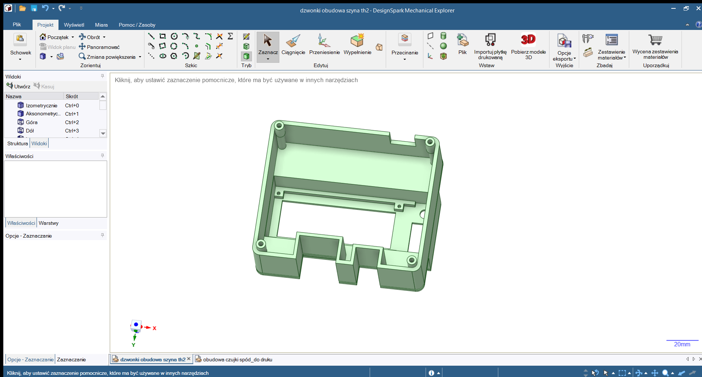
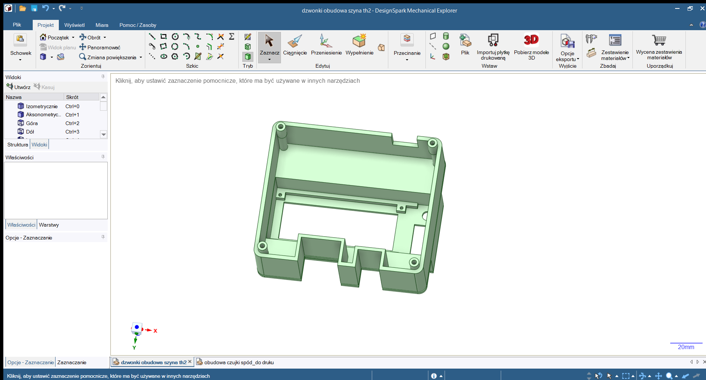

Prototyp PCB

1. Wstęp
2. Cele i założenia
3. Przebieg pracy
4. Część informatyczna
-- 4.1. Backend - strona serwerowa
-- 4.2. Frontend - strona użytkownika
-- 4.3. Działanie aplikacji
-- 4.4. Wygląd aplikacji
5. Część mechatroniczna - sterownik
-- 5.1. Prototyp sterownika
-- 5.2. Gotowy produkt - sprzęt
-- 5.3. Gotowy produkt - program
6. Kosztorys
7. Zalety i korzyści
8. Konkurencyjność
9. Innowacyjność
10. Plany na przyszłość
11. Gdzie nas można znaleść
Jedną z najważniejszych zalet Net-Worku jest jego infrastruktura informatyczna. W celu zbudowania funkcjonującego systemu wykorzystane zostały najnowsze frameworki oraz języki programowania. Samo oprogramowanie zostało napisane w kilku językach, strona serwerowa została napisana w języku Go, natomiast strona użytkownika została napisana w języku JavaScript wraz z frameworkiem Vue.js i komponentami w najnowszym standardzie material, Vuetify, do automatyzacji kompilacji i uruchamiania oprogramowania został wykorzystany Make oraz Bash.
Komunikacja w oprogramowaniu opiera się na protokołach Message Queuing Telemetry Transport (MQTT) w wersji 3.11 oraz Represantional State Transfer (REST), oba protokoły są przydatne w różnych kontekstach komunikacyjnych. Protokół MQTT został wykorzystany ze względu na jego lekkość i efektywność, co czyni go idealnym rozwiązaniem dla aplikacji związanych z Internetem Rzeczy (IoT) oraz systemów o niskich wymaganiach zasobowych. Dzięki modelowi publikacji i subskrypcji (PUBSUB), MQTT umożliwia efektywną wymianę danych między urządzeniami w czasie rzeczywistym. Z kolei architektura REST stanowi uniwersalny interfejs komunikacyjny, który pozwala na zarządzanie zasobami w sposób zrozumiały dla ludzi oraz maszyn. Wykorzystanie tych protokołów pozwala na elastyczne i skalowalne budowanie aplikacji, które są w stanie efektywnie komunikować się z różnymi systemami i urządzeniami.
W celu zbudowania bezpiecznego oraz wydajnego serwera REST i brokera MQTT, wykorzystane zostały następujące pakiety języka Go:
Technologie te pozwalają na bezpośrednią integracje obu protokołów komunikacyjnych w jednej bazie kodu. W przypadku pakietu GIN dodatkowe możliwości wprowadzania middleware'ów (programów pośrednich między żądaniem a właściwą częścią aplikacji) pozwoliły na proste wbudowanie dodatkowych zabezpieczeń dostępu do serwera REST, takich jak:
Ograniczenie szybkości zapytań (Rate Limiting) które jak sama nazwa wskazuje zmniejsza częstotliwość odpowiedzi na zapytania pochodzących od jednego klienta w określonym przedziale czasowym, co może pomóc w zapobieganiu nadmiernemu obciążeniu serwera.
Tokeny JWT (Json Web Token) które stanowią sposób na uwierzytelnianie i autoryzację użytkowników w serwerze REST. JWT są tokenami zawierającymi informacje o użytkowniku oraz jego uprawnieniach, podpisane przez serwer, co pozwala na bezpieczne przesyłanie tych danych między klientem a serwerem. Dzięki nim można łatwo kontrolować dostęp do zasobów oraz identyfikować użytkowników w systemie.
Natomiast pakiet COMQTT zapewnia nie tylko implementację protokołu MQTT, ale również możliwość bezpośredniego konfigurowania, monitorowania oraz ingerencji w broker MQTT. Dzięki temu można skonfigurować różne parametry działania brokera w sposób programowy, takie jak na przykład maksymalny rozmiar wiadomości czy maksymalna liczba połączonych klientów, a także monitorować jego wydajność i obciążenie. Ważną kwestią jest też możliwość uwierzetelniania klientów którzy próbują połączyć się z brokerem, realizowane jest to poprzez pozyskiwanie danych na temat klientów z bazy danych oraz porównywanie danych z którymi dany klient próbuje się połączyć. W wyniku tego można zapewnić bezpieczne i kontrolowane połączenia między klientami a brokerem MQTT.
Dzięki wykorzystaniu tych pakietów możliwe było zrealizowanie nie tylko bezpiecznego, ale także wydajnego serwera REST oraz brokera MQTT, który spełnia wymagania zarówno pod kątem funkcjonalności, jak i wydajności.
Ważną rzeczą w naszym oprogramowaniu jest również integracja z relacyjną bazą danych PostgreSQL, aplikacja wykorzystuje ją aby przetrzymywać lub odczytywać dane na temat zarejestrowanych użytkowników, urządzeń, konfiguracji urządzeń czy wtyczek. Ingerować w nią mogą zarejestrowani użytkownicy posiadający odpowiedni poziom uprawnień.
Dodawanie i obsługa urządzeń opiera się na wcześniej wspomnianych wtyczkach. Są one implementacjami programowymi, które mogą być dynamicznie załadowane do głównego projektu jako moduły zewnętrzne lub statycznie, bezpośrednio przy kompilacji głównego programu. Funkcjonalność taką umożliwia wbudowany do języka Go, pakiet Plugin. Wtyczki te są kompilowane do plików typu .so (Shared Object) (odpowiednik plików DLL tylko że dla systemów na bazie UNIX'a), umożliwiając ich dynamiczne ładowanie i wykonanie w kontekście głównej aplikacji. Dzięki temu rozwiązaniu możliwe jest rozszerzanie funkcjonalności Net-Worku poprzez dodawanie nowych wtyczek bez konieczności modyfikacji kodu głównego programu. Wtyczki te stanowią modularne rozszerzenia aplikacji, co pozwala na elastyczne dostosowywanie i rozbudowywanie systemu w zależności od potrzeb użytkowników.
Wtyczki muszą posiadać zarówno stronę serwerową jak i stronę użytkownika, strona serwerowa wykorzystywana jest do komunikacji instancji wtyczki z urządzeniem któremu została przypisana. Odbywa się to poprzez interfejs API (Application Programming Interface) udostępniony przez wtyczkę, który umożliwia komunikację, poprzez różne protokoły komunikacyjne, z głównym systemem sterowania oraz obsługę żądań związanych z danym urządzeniem.
Z kolei strona użytkownika wtyczki dostarcza interfejs graficzny, który umożliwia użytkownikowi konfigurację oraz monitorowanie działania danego urządzenia. Jest to miejsce, w którym użytkownik może na przykład zarządzać ustawieniami, przeglądać historię działania urządzenia, oraz podejmować różne akcje w zależności od funkcjonalności wtyczki i urządzenia. W ten sposób wtyczki pełnią kluczową rolę w zapewnieniu interakcji pomiędzy użytkownikiem a systemem sterowania, umożliwiając zarówno monitorowanie, jak i zarządzanie podłączonymi urządzeniami.
Wtyczki mogą mieć dowolną funkcjonalnosć dostosowaną do wymogów konkretnego urządzenia lub systemu, co umożliwia elastyczne dostosowanie ich do różnorodnych zastosowań. W ten sposób, dzięki wtyczkom, użytkownik może rozbudowywać funkcjonalność systemu sterowania zgodnie z własnymi potrzebami.
Dodatkowe narzędzia i paczki użyte przy tworzeniu i testowaniu strony serwerowej:
Aplikacja internetowa w całości oparta została na frameworku Vue.js 3. Dzięki zastosowaniu tej technologii aplikacja pod względem wydajnościowym wyraźnie wyprzedza inne projekty, które z domysłu oparte są o statyczne strony internetowe.
Aplikacja internetowa oparta jest na nowoczesnych technologiach takich jak framework Vue.js 3, Vite 5.2.2 jako narzędzie do budowania projektu w jedna spójną całość gotową do uruchomienia, oraz Vuetify, biblioteki komponentów Material Design. W połączeniu z biblioteką Pinia 2.1.7 do zarządzania stanem aplikacji oraz Axios 1.6.7 do komunikacji z serwerem, te technologie pozwoliły nam na stworzenie wyjątkowo wydajnej aplikacji jednostronowej SPA (Single Page Application). Vue.js umożliwia dynamiczne routowanie po stronie użytkownika, eliminując jednocześnie konieczność przeładowywania całej strony podczas przejść miedzy różnymi widokami, co poprawia doświadczenie i komfort użytkownika. Pinia wraz z Axios zapewniają bezpieczną i wydajną komunikację z serwerem, a wykorzystanie komponentów z Vuetify ułatwiło stworzenie interfejsu użytkownika zgodnego ze standardem Material Design. Dzięki temu, architektura kodu aplikacji staje się bardziej przejrzysta i skalowalna, co znacznie ułatwia rozwój aplikacji o nowe funkcjonalności.
Głównymi zadaniami naszego oprogramowania Net-Work jest przedewszystkim łączenie urządzeń w jednym miejscu i umożliwienie niekoniecznie technologicznie zaawansowanym użytkownikom korzystanie z tych urządzeń. Urządzenia mogą łączyć się z brokerem MQTT na kilka sposobów:
Poprzez emitowany przez oprogramowanie serwis MDNS, który umożliwia proste "otrzymanie" adresu IP brokera w sieci lokalnej i połączenie się z nim. Użytkownik musi pozyskać niezbędne dane urządzenia poprzez skorzystanie z dostępnego interfejsu (na przykład wyświetlacza LCD), gdzie prezentowane są wygenerowane dane potrzebne do utworzenia połączenia, takie jak nazwa klienta MQTT, nazwa użytkownika i hasło. Dzięki temu prostemu mechanizmowi użytkownik może szybko i łatwo skonfigurować urządzenia do pracy w sieci MQTT bez konieczności ręcznego wprowadzania adresu IP brokera czy innych szczegółowych ustawień sieciowych.
Poprzez manualne skonfigurowanie adresu IP brokera MQTT w ustawieniach urządzenia. Ten sposób wymaga od użytkownika znajomości adresu IP oraz innych szczegółowych parametrów sieciowych brokera i urządzenia. Po uzyskaniu tych informacji użytkownik musi ręcznie wprowadzić je do urządzenia na przykład poprzez SSH (Secure Shell), co może być bardziej skomplikowane dla osób mniej zaznajomionych z technicznymi aspektami sieci komputerowych. Jednakże, dla bardziej zaawansowanych użytkowników, ten sposób może być preferowany ze względu na większą kontrolę nad konfiguracją sieciową urządzenia.


Naszym projektem nie jest jedynie oprogramowanie, należy do niego również nasz sterownik Schedule-Keepr 1.0 który jest jednocześnie pierwszym urządzeniem funkcjonującym w naszym systemie. Jego zadaniem jest automatyzowanie funkcji aktywacji (w odpowiednim przedziale czasowym lub na żądanie) dzwonków lub jakiegokolwiek innego peryferium które może być sterowane wyjściem przekaźnikowym.


W protopie naszego sterownika zdecydowaliśmy się tymczasowo zastosować popularny komputer jednopłytkowy Raspberry Pi zero W 2,
stanowił on jednostkę centralną która wykonywała dedykowany program. Dodatkowo, wykorzystaliśmy wyświetlacz LCD, który umożliwiał intuicyjne wyświetlanie informacji użytkownikowi oraz poprawiał interakcję z naszym systemem. Prototyp, jak widać na załączonym zdjęciu, nie posiadał na początku żadnej obudowy.
Jeżeli chodzi o jednostkę centralną tym razem wykorzystaliśmy NanoPi Neo 1.4, która została wybrana ze względu na jej kompaktowy rozmiar, niskie zużycie energii (i również łatwa dostępność) oraz wystarczającą moc obliczeniową do realizacji zadań z zakresu sterowania i komunikacji w naszym systemie. Ma zainstalowany system Debian 12 co zapewnia stabilność oraz wsparcie dla szerokiego zakresu aplikacji i narzędzi programistycznych, co jest kluczowe dla efektywnej pracy naszego oprogramowania.

Jako urządzenie wyjściowe został zastosowany wyświetlacz LCD HD44780 (16x02) wraz z konwerterem I2C PCF8574, co umożliwia łatwe i wygodne wyświetlanie informacji użytkownikowi. Dzięki konwerterowi I2C, komunikacja z wyświetlaczem jest uproszczona, co znacząco ułatwia integrację tego komponentu z resztą systemu.

Głównym zadaniem naszego sterownika jest zapewnienie dokładnego pomiaru czasu. Do tego celu wykorzystaliśmy moduł czasu rzeczywistego (RTC) DS3231, który oferuje nie tylko wysoką precyzję zegara, ale ma także wbudowaną funkcje kompensacji zegara względem temperatury. Dzięki temu urządzenie utrzymuje dokładność pomiaru nawet w warunkach zmiennej temperatury otoczenia. Dodatkowo, moduł DS3231 cechuje się niskim zużyciem energii, co przekłada się na długą żywotność baterii. Te zalety, wraz z prostym interfejsem komunikacyjnym i tym, że jednostka centralna nie musi synchronizować czasu z serwera NTP po każdej utracie zasilania, czynią go idealnym dla nas rozwiązaniem.
W gotowym produkcie zamiast płytki stykowej lub perforowanej - przydatnych w pierwszych fazach budowy i testowania sterownika - została stworzona dedykowana płytka PCB, którą stosuje się praktycznie we wszystkich profesjonalnych urządzeniach elektronicznych. Wynika to między innymi z tego że płytki PCB świetnie nadają się do tworzenia dowolnych układów elektronicznych o dowolnej złożoności.

Do zaprojektowania schematu jak i układu płytki PCB sterownika wykorzystany został program KiCad 6.0.2, jest to bardzo popularny wybór wśród entuzjastów elektroniki jak i profesjonalistów. Program ten oferuje zaawansowane narzędzia do projektowania schematów i układów PCB, co pozwoliło efektywnie stworzyć projekt sterownika. Jego popularność wynika z tego, że jest darmowy i otwarto źródłowy, co czyni go dostępnym dla szerokiego grona użytkowników.
Zamówienie wyprodukowania płytek (10 sztuk) zostało złożone na stronie PCBWay.


Aby zapewnić wszechstronną kompatybilność naszego sterownika z różnorodnymi urządzeniami, zdecydowaliśmy się na wykorzystanie układu (nr. 6) opartego na dwóch tranzystorach BSS138 (MOSFET typu N) oraz czterech rezystorach. Ten układ jest przeznaczony do konwersji poziomów logicznych, co umożliwia skuteczną integrację naszego sterownika z różnymi urządzeniami wykorzystującymi protokół komunikacyjny I2C.

Na płytce znalazło się również wiele przydatnych wyprowadzeń, w tym wyprowadzenia z rezystorami podciągającymi w górę lub w dół (nr. 5). Te rezystory są kluczowe dla umożliwienia podpięcia różnych czujników, urządzeń wejściowych (takich jak przełączniki czy guziki) a nawet GPIO komputera jednopłytkowego znajdującego się w środku. Ich obecność zapewnia nie tylko elastyczność w integracji z różnymi układami lub urządzeniami, ale także stabilność sygnałów logicznych, co gwarantuje niezawodną pracę naszego sterownika w różnorodnych warunkach użytkowania.
Na tej płytce znajdują się również 2 wyjścia śrubowe od przekaźnika (nr. 2), które są używane do przesterowywania podłączonych do nich urządzeń. Dodatkowo, umieszczone zostały wskaźniki LED (nr. 4) - niebieski wskaźnik informuje o stanie cewki przekaźnika, żółty oznacza zasilanie 3.3V, natomiast czerwony sygnalizuje zasilanie 5V - elementy te nie tylko zapewniają kontrolę nad działaniem urządzenia, ale także umożliwiają szybką diagnostykę stanu pracy sterownika, co przyczynia się do sprawnego monitorowania oraz konserwacji systemu.
 

Model obudowy został wykonany w programie DesignSpark Mechanical, który pozwolił nam stworzyć precyzyjny projekt z uwzględnieniem wszystkich szczegółów konstrukcyjnych. Starannie zaprojektowaliśmy każdy aspekt obudowy, aby zapewnić nie tylko estetyczny wygląd, ale także ochronę dla wrażliwych podzespołów znajdujących się wewnątrz. Dodatkowo, projektowanie w programie DesignSpark Mechanical umożliwiło nam łatwe dostosowanie obudowy do naszych indywidualnych potrzeb oraz szybką iterację w celu wprowadzenia ewentualnych zmian i ulepszeń.


Dedykowany program do sterownika został napisany w językach programowania Go oraz Bash, realizuje on zadania z zakresu sterowania przekaźnikiem wbudowanym w płytkę PCB, synchronizacją zapisanego lokalnie harmonogramu przesterowywania przekaźnika oraz czasu zegara RTC pobranego z serwera NTP, dane na temat tego harmonogramu sterownik pozyskuje poprzez swoją instancje dedykowanej wtyczki w brokerze MQTT co pozwala zsynchronizować ten sam harmonogram na wielu urządzeniach na raz. Sam harmonogram po stronie wtyczki pobierany jest ze strony naszej szkoły, co umożliwia precyzyjne określenie momentu przełączenia przekaźnika na podstawie ustalonych przedziałów lekcji i przerw.
Skrypty w języku Bash używane są do interakcji z urządzeniami /dev/, takimi jak na przykład urządzenia GPIO (General Purpose Input/Output) oraz do ustawiania czasu systemowego na podstawie danych z zegara RTC. Te skrypty wykonują kluczowe operacje sterowania, w tym przesterowywanie pinów GPIO w odpowiednim momencie (określonym z góry przez program w Go) oraz synchronizację czasu systemowego z dokładnym czasem dostarczanym przez RTC. Dzięki temu zapewniona jest precyzja i niezawodność w działaniu sterownika, a także możliwość zaprogramowania różnych zachowań w zależności od warunków czasowych i sygnałów zewnętrznych.
| Nazwa | Ilość | Cena |
|---|---|---|
| Obudowa Schedule-Keepr | 1 | 15 zł |
| NanoPi Neo 1.4 | 1 | 149 zł |
| Chłodzenie NanoPi | 1 | 9 zł |
| Wyświetlacz LCD HD44780 | 1 | 25 zł |
| Zegar RTC DS3231 | 1 | 31 zł |
| Wyłącznik bistabilny | 1 | 2 zł |
| Wyłącznik kołyskowy bistabilny | 1 | 3 zł |
| Zasilacz montażowy Mean Well | 1 | 42 zł |
| Przewody połączeniowe | 1 | 6 zł |
| Przewód 1 mm^2 | 1 mb | 5.50 zł |
| Przekaźnik RELPOL | 1 | 12.99 zł |
| Śrubki, nakrętki, podkładki | - | 4 zł |
| Przewody, rezystory, złącza, diody, tranzystory | - | 18 zł |